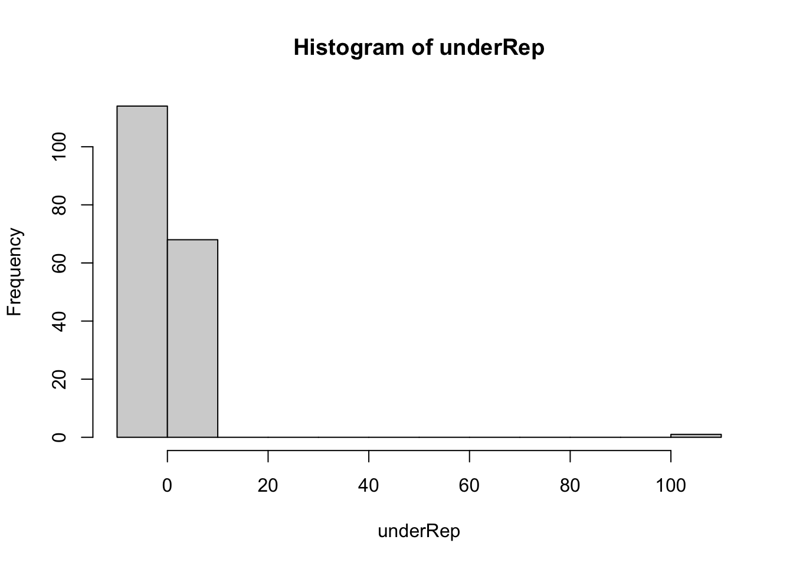
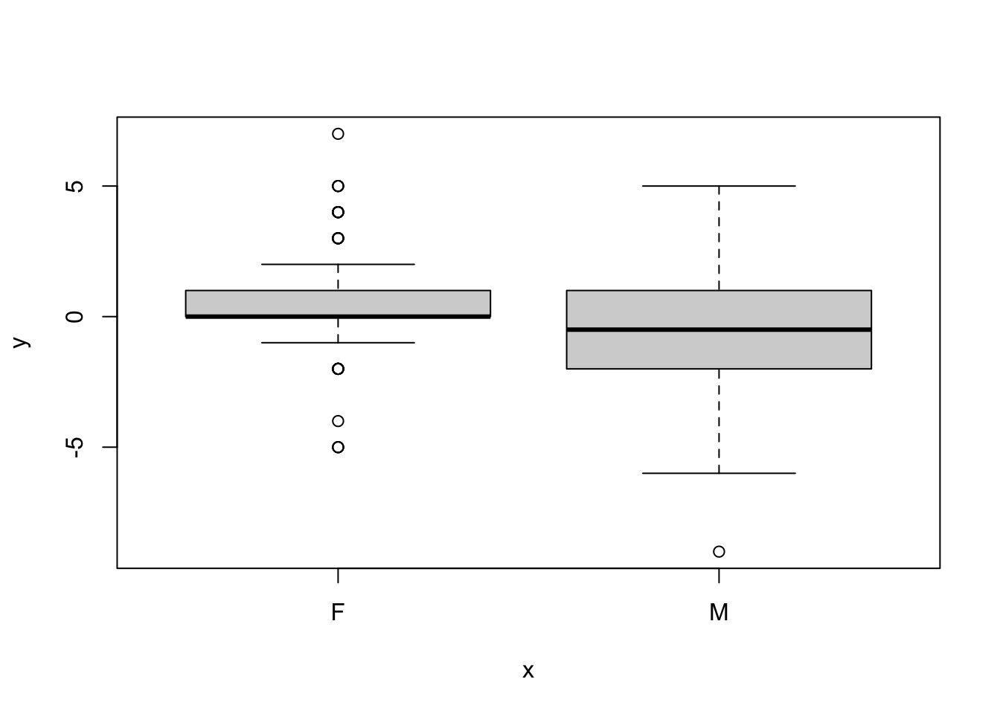

Data Manipulation, Summarization, and Statistical Testing in R
In this markdown document, we will explore data manipulation, summarization, and statistical testing techniques using the Davis dataset from the car package in R. We will cover creating new variables, summarizing data, using conditional statements and loops, advanced data summarization techniques, and simple follow-up statistical testing. Each section will be introduced and explained, followed by the corresponding R code chunks.
Setup
Before we begin, let’s load the necessary package and attach the Davis dataset. We load the car package using library() to gain access to the Davis dataset. We attach the dataset to the current R workspace using attach() and verify its availability in the search path using search().
library(car) #load the "car" package to get access to the Davis dataset (self-reported weight by gender)
Loading required package: carData
attach(Davis) #attach data to current R workspacesearch() #package "car" (and thus the dataset "Davis") now available in R search path
In this section, we will create a new vector for our analyses and perform various data manipulations and summarizations. We first create a new variable underRep by subtracting repwt from weight. We calculate the mean of underRep and handle missing values using na.rm=T. We then summarize the data by calculating the proportion of people who underreport their weight overall and by gender.
#CREATE a new vector for our analysesunderRep <- weight-repwt #create a new variable of underreported weightmean(underRep) #summarize underreporting variable. What's the issue?
[1] NA
mean(underRep,na.rm=T) #see ?mean to see why this happens
[1] 0.6010929
#SUMMARIZE data, plus additional conditioning by genderlength(which(underRep >0))/nrow(Davis) #how many people underreport their weight overall?
Let’s bind the new variable to the data frame using cbind(), sort the data frame in descending order, and visualize the distribution of underRep using hist().
It looks like we have an extreme outlier in the dataset. Let’s assume it’s a cording error during data entry and learn to fix it. So, we now clean the data by correcting the data entry error in row 12. Next, we repeat the process of creating the underRep variable to ensure the coding error is ineffective. We drop the underRep column using various methods, detach the Davis data with the coding error, and reattach the corrected data frame dat. Finally, we recalculate underRep and bind it to the data frame again.
#BIND new variable to the data frame and sort descendingdat <-cbind(Davis,underRep)#bind to data framehead(dat[order(underRep,decreasing=T),]) #order the data frame - any issue arising?
sex weight height repwt repht underRep
12 F 166 57 56 163 110
2 F 58 161 51 159 7
35 F 68 169 63 170 5
59 M 75 172 70 169 5
84 F 60 167 55 163 5
187 F 60 172 55 168 5
hist(underRep)#take a look at the histogram of our underreporting variable

#let's clean the datadat[12,2] <-57#assumption: case 12 (weight==166) is a data entry errordat[12,3] <-166#assumption: case 12 (weight==166) is a data entry errorhead(dat, n=12) #now, let's double check case / row 12
sex weight height repwt repht underRep
1 M 77 182 77 180 0
2 F 58 161 51 159 7
3 F 53 161 54 158 -1
4 M 68 177 70 175 -2
5 F 59 157 59 155 0
6 M 76 170 76 165 0
7 M 76 167 77 165 -1
8 M 69 186 73 180 -4
9 M 71 178 71 175 0
10 M 65 171 64 170 1
11 M 70 175 75 174 -5
12 F 57 166 56 163 110
#REPEAT the process (creating the new underreporting variable# to make sure the coding error is ineffective!#first, drop the underRep column #various ways to do this. Here are 3 options:dat$underRep <-NULL#option 1dat <- dat[,!names(dat) %in%"underRep"] #option 2 with indexing with column namesdat <- dat[,-6]#option 3 with indexing without column names but number; see names(dat) for positionhead(dat)
sex weight height repwt repht
1 M 77 182 77 180
2 F 58 161 51 159
3 F 53 161 54 158
4 M 68 177 70 175
5 F 59 157 59 155
6 M 76 170 76 165
#second, we detach the Davis data with coding error and use the corrected data frame "dat"detach(Davis)attach(dat)search()
#finally, we repeat the underRep computing and bind it to the data frameunderRep <- weight-repwt dat <-cbind(dat,underRep)
Now, let’s summarize the entire data frame using summary() and compare it to the original Davis data.
#SUMMARIZE a whole data framesummary(dat)
sex weight height repwt repht
F:112 Min. : 39.00 Min. :148.0 Min. : 41.00 Min. :148.0
M: 88 1st Qu.: 55.00 1st Qu.:164.0 1st Qu.: 55.00 1st Qu.:160.5
Median : 63.00 Median :169.5 Median : 63.00 Median :168.0
Mean : 65.25 Mean :170.6 Mean : 65.62 Mean :168.5
3rd Qu.: 73.25 3rd Qu.:177.2 3rd Qu.: 73.50 3rd Qu.:175.0
Max. :119.00 Max. :197.0 Max. :124.00 Max. :200.0
NA's :17 NA's :17
underRep
Min. :-9.000000
1st Qu.:-1.000000
Median : 0.000000
Mean : 0.005464
3rd Qu.: 1.000000
Max. : 7.000000
NA's :17
summary(Davis$weight-Davis$repwt)#let's compare this to the original Davis data
Min. 1st Qu. Median Mean 3rd Qu. Max. NA's
-9.0000 -1.0000 0.0000 0.6011 1.0000 110.0000 17
Conditional Statements & Loops
In this section, we will use control statements and loops to create new variables and perform various conditional operations. We use control statements like ifelse() to create new variables based on conditions. Let’s start with a simple dichotomization of the underRep variable into binUnder and create a new variable genderMale indicating gender.
#CONTROL STATEMENTSbinUnder <-ifelse(underRep>0, 1,0) #dichotomize underreporting variablegenderMale <-ifelse(sex=="M", 1, ifelse(sex=="F", 0, NA)) #create a new variable with ifelse()newVars <-cbind(binUnder,genderMale) #create vector of new variablesdat <-cbind(dat,newVars) #attach new variables to data framehead(dat)
sex weight height repwt repht underRep binUnder genderMale
1 M 77 182 77 180 0 0 1
2 F 58 161 51 159 7 1 0
3 F 53 161 54 158 -1 0 0
4 M 68 177 70 175 -2 0 1
5 F 59 157 59 155 0 0 0
6 M 76 170 76 165 0 0 1
Now let’s explore how to combine control statements in a function bmiTrain(). The new function prints a message based on the BMI value.
#COMBINE control statements in a functionbmiTrain <-function(x) {if(x >25) {print("You should exercise!")} #a bmi > 25 indicates overweightelse {print("Awesome, get some brownies and relax!")} }bmiTrain(26)
[1] "You should exercise!"
Let’s explore now how to use loops. We start with a simple loop that prints a sequence of numbers. Next, we use a loop to create a new categorical variable bmiCat for BMI. We iterate over the length of the data frame, calculate each BMI value, and assign a category based on the BMI range. We also calculate the numeric BMI values and bind both bmiCat and bmiNum to the data frame.
#LOOPS #loops iterate over an index (provided as a vector) and perform some operations#Here's a simple example to print a sequence of numbersfor(i in1:10) {print(i)}
#Using a loop to create a new categorical variable for BMIbmiCat <-NA#first, create an empty variable "bmiCat"for(i in1:nrow(dat)){ #next, iterate over length of the data frame to calculate each bmi bmiCat[i] <-ifelse(weight[i]/(height[i]/100)^2>25, "overweight", ifelse(weight[i]/(height[i]/100)^2<18.5, "underweight", "normal"))}bmiNum <- weight/(height/100)^2dat <-cbind(dat,bmiCat,bmiNum)head(dat)
sex weight height repwt repht underRep binUnder genderMale bmiCat
1 M 77 182 77 180 0 0 1 normal
2 F 58 161 51 159 7 1 0 normal
3 F 53 161 54 158 -1 0 0 normal
4 M 68 177 70 175 -2 0 1 normal
5 F 59 157 59 155 0 0 0 normal
6 M 76 170 76 165 0 0 1 overweight
bmiNum
1 23.24598
2 22.37568
3 20.44674
4 21.70513
5 23.93606
6 26.29758
Finally, let’s save the modified data frame dat as a CSV file and a text file.
#Save the datawrite.csv(dat,"DavisData.csv")write.table(dat,"DavisData.txt")
More Advanced Summarization
In this section, we will explore more advanced and concise ways to summarize data using apply functions and packages like plyr and dplyr. We use apply functions like lapply() and tapply() to summarize data efficiently. lapply() applies a function to each element of a list and returns a list, while tapply() applies a function to subsets of a vector based on a factor variable.
#APPLY functions of the base installation in R to summarize data#lapply applies a function to each element of a list and returns a listx <-list(a =1, b =1:3, c =10:100) lapply(x, FUN = length)
$a
[1] 1
$b
[1] 3
$c
[1] 91
lapply(x, FUN = mean)
$a
[1] 1
$b
[1] 2
$c
[1] 55
#tapply for subsets of a vector (which are typically other vectors of type "factor")tapply(bmiNum,sex,mean) #prints mean of bmi by sex
F M
20.95390 23.89901
tapply(bmiNum[binUnder==1],sex[binUnder==1],mean) #same, but conditioned by binary underreporters
F M
21.58009 25.21908
tapply(bmiNum[binUnder==0],sex[binUnder==0],mean) #same, but conditioned by binary non-underreporters
F M
20.66636 23.27958
We can also use dedicated packages for data wrangling such as the plyr package, which provides a rich set of options for data summarization. We use ddply() to summarize the data frame by sex and binUnder, calculating the mean and standard deviation of bmiNum.
#PLYR package has a rich set of options to summarize data efficiently #the first two letters of all plyr functions indicate the input and output format; see ?plyr#Here: ddply = input is a data frame and output is also a data framelibrary(plyr)
Attaching package: 'plyr'
The following object is masked from 'package:here':
here
temp <-ddply(dat, .(sex,binUnder), summarize,mean =round(mean(bmiNum),2),sd =round(sd(bmiNum),2))temp #print the result of the ddply function
sex binUnder mean sd
1 F 0 20.67 2.46
2 F 1 21.58 1.66
3 F NA 20.11 1.66
4 M 0 23.28 3.22
5 M 1 25.22 2.64
6 M NA 23.64 2.71
str(temp)#check the structure of the ddply result using str()
'data.frame': 6 obs. of 4 variables:
$ sex : Factor w/ 2 levels "F","M": 1 1 1 2 2 2
$ binUnder: num 0 1 NA 0 1 NA
$ mean : num 20.7 21.6 20.1 23.3 25.2 ...
$ sd : num 2.46 1.66 1.66 3.22 2.64 2.71
We also can use the aggregate() function from base R, which produces equivalent results to ddply() but with fewer options. We aggregate bmiNum by sex and binUnder using the mean() function.
#AGGREGATE function (in base installation of R) with less options but producing equivalent resultsaggregate(bmiNum ~ sex, dat, mean) #bmiNum is aggregated by sex and summarized using the mean() function
sex bmiNum
1 F 20.95390
2 M 23.89901
aggregate(bmiNum ~ sex + binUnder, dat, mean) #bmiNum is aggregated by sex and summarized using the mean() function
sex binUnder bmiNum
1 F 0 20.66636
2 M 0 23.27958
3 F 1 21.58009
4 M 1 25.21908
aggregate(cbind(bmiNum,height) ~ sex + binUnder, dat, mean) #you can also aggregate by more than one variable using cbind()
sex binUnder bmiNum height
1 F 0 20.66636 165.0508
2 M 0 23.27958 177.4909
3 F 1 21.58009 164.5476
4 M 1 25.21908 179.0741
Finally, we can also summarize the data using in a table format using crosstables. We create a contingency table using table() and use the CrossTable() function from the gmodels package for a simpler and more informative representation.
#SUMMARIZE by using crosstables table(sex,binUnder) #create a contingency table
binUnder
sex 0 1
F 59 42
M 55 27
library(gmodels)CrossTable(sex,binUnder) #simpler and more informative using the CrossTable() function in the gmodels package
Cell Contents
|-------------------------|
| N |
| Chi-square contribution |
| N / Row Total |
| N / Col Total |
| N / Table Total |
|-------------------------|
Total Observations in Table: 183
| binUnder
sex | 0 | 1 | Row Total |
-------------|-----------|-----------|-----------|
F | 59 | 42 | 101 |
| 0.244 | 0.403 | |
| 0.584 | 0.416 | 0.552 |
| 0.518 | 0.609 | |
| 0.322 | 0.230 | |
-------------|-----------|-----------|-----------|
M | 55 | 27 | 82 |
| 0.301 | 0.497 | |
| 0.671 | 0.329 | 0.448 |
| 0.482 | 0.391 | |
| 0.301 | 0.148 | |
-------------|-----------|-----------|-----------|
Column Total | 114 | 69 | 183 |
| 0.623 | 0.377 | |
-------------|-----------|-----------|-----------|
Follow-Up Statistical Testing
Finally, let’s perform some simple follow-up statistical testing to explore differences in underreporting based on gender. We create a plot of sex against underRep to visually examine the relationship.
plot(sex,underRep)

Let’s perform a one-sample t-test using t.test() to determine if underreporting is significantly different from zero.
t.test(underRep,mu=0)#is underreporting significantly different from zero?
One Sample t-test
data: underRep
t = 0.031938, df = 182, p-value = 0.9746
alternative hypothesis: true mean is not equal to 0
95 percent confidence interval:
-0.3321223 0.3430513
sample estimates:
mean of x
0.005464481
Ok, so overall there is no difference. But is there a difference between gender? Let’s conduct a two-sample t-test using t.test() to find out.
t.test(underRep~sex)#underreporting differences based on gender?
Welch Two Sample t-test
data: underRep by sex
t = 3.1261, df = 156.48, p-value = 0.002112
alternative hypothesis: true difference in means between group F and group M is not equal to 0
95 percent confidence interval:
0.3940971 1.7469316
sample estimates:
mean in group F mean in group M
0.4851485 -0.5853659
Summary & Conclusion
Nice, we did it! Today, we explored various types of data manipulation, summarization, and statistical testing techniques using the Davis dataset in R.
Now, we’re well prepared to get into statistical model building and data visulization tomorrow in Day 3.